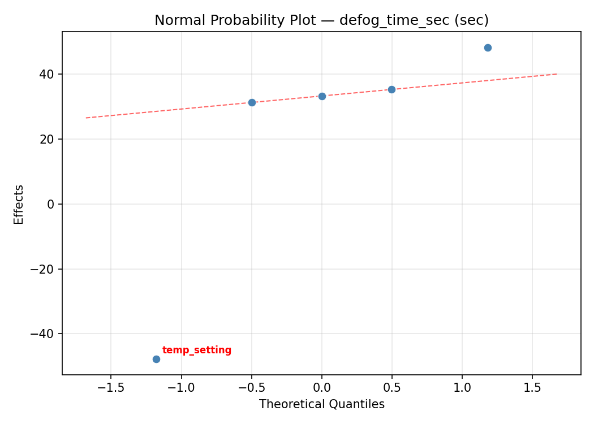
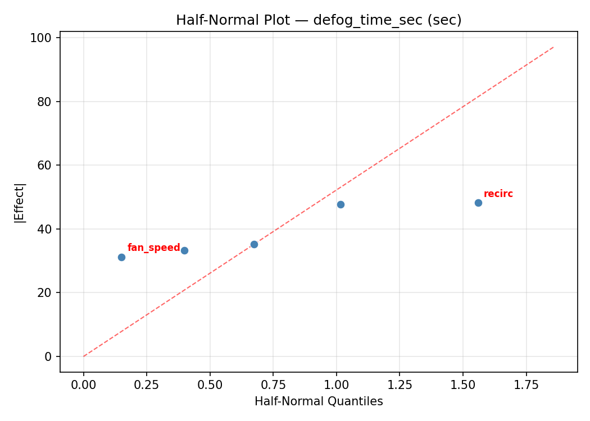
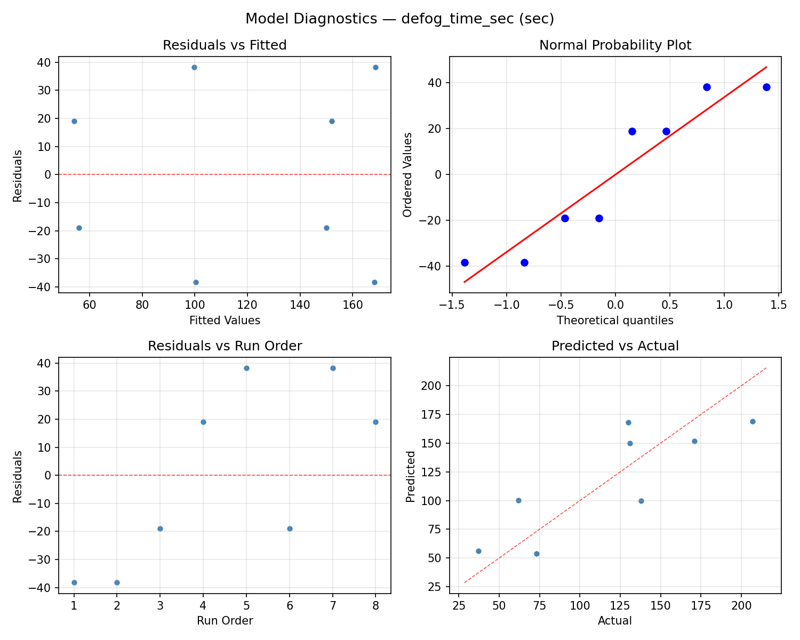
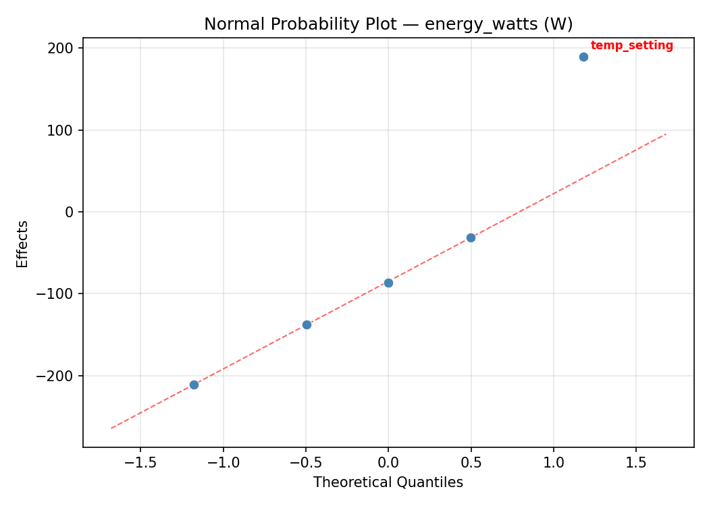
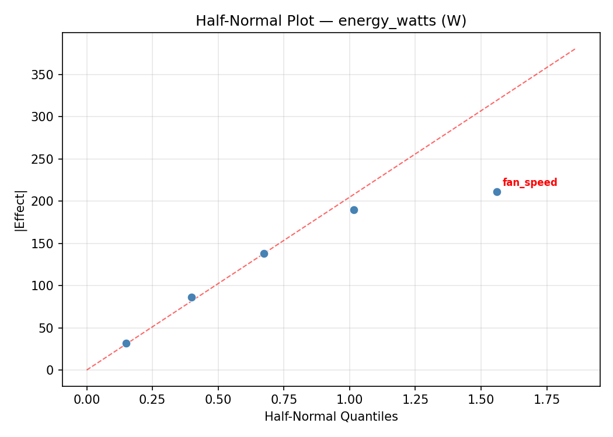
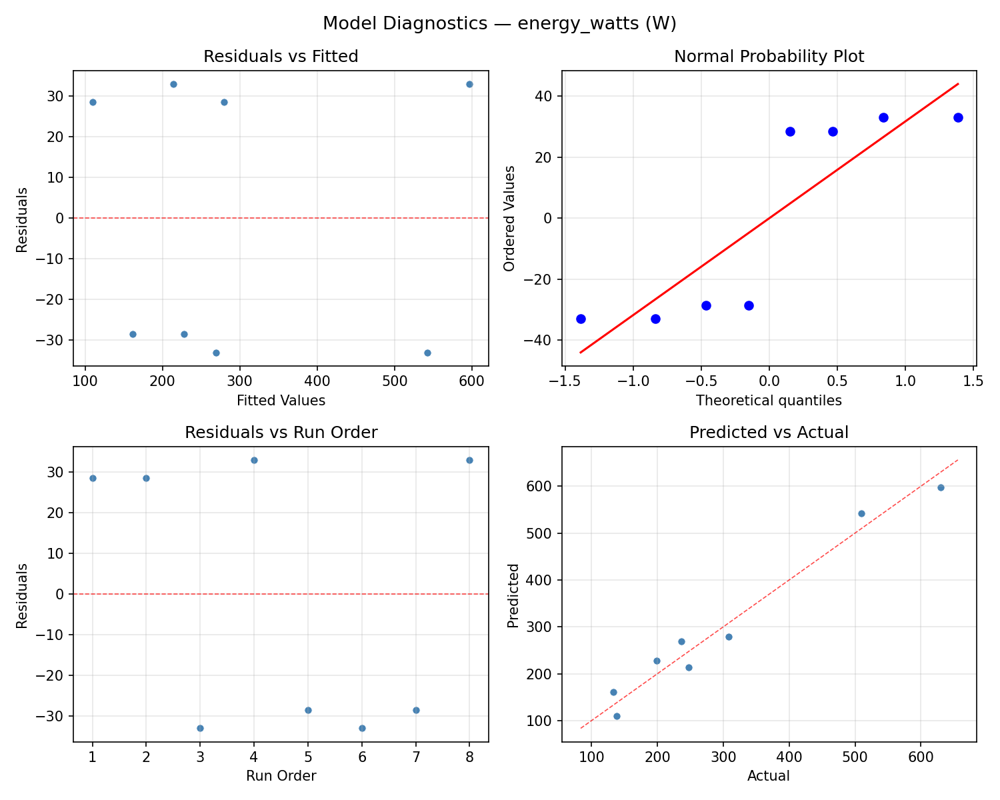

Summary
This experiment investigates windshield defog strategy. Fractional factorial of fan speed, temperature setting, AC mode, recirculation, and rear defrost to minimize defog time and energy use.
The design varies 5 factors: fan speed (level), ranging from 1 to 5, temp setting (C), ranging from 18 to 30, ac on (bool), ranging from 0 to 1, recirc (bool), ranging from 0 to 1, and rear defrost (bool), ranging from 0 to 1. The goal is to optimize 2 responses: defog time sec (sec) (minimize) and energy watts (W) (minimize). Fixed conditions held constant across all runs include ambient temp = 2C, humidity = 85pct.
A fractional factorial design reduces the number of runs from 32 to 8 by deliberately confounding higher-order interactions. This is ideal for screening — identifying which of the 5 factors matter most before investing in a full study.
Key Findings
For defog time sec, the most influential factors were ac on (43.8%), temp setting (30.2%), rear defrost (17.5%). The best observed value was 37.0 (at fan speed = 5, temp setting = 18, ac on = 0).
For energy watts, the most influential factors were recirc (38.0%), ac on (32.9%), rear defrost (13.3%). The best observed value was 133.0 (at fan speed = 1, temp setting = 18, ac on = 0).
Recommended Next Steps
- Follow up with a response surface design (CCD or Box-Behnken) on the top 3–4 factors to model curvature and find the true optimum.
- Consider whether any fixed factors should be varied in a future study.
- The screening results can guide factor reduction — drop factors contributing less than 5% and re-run with a smaller, more focused design.
Experimental Setup
Factors
| Factor | Low | High | Unit |
|---|
fan_speed | 1 | 5 | level |
temp_setting | 18 | 30 | C |
ac_on | 0 | 1 | bool |
recirc | 0 | 1 | bool |
rear_defrost | 0 | 1 | bool |
Fixed: ambient_temp = 2C, humidity = 85pct
Responses
| Response | Direction | Unit |
|---|
defog_time_sec | ↓ minimize | sec |
energy_watts | ↓ minimize | W |
Configuration
{
"metadata": {
"name": "Windshield Defog Strategy",
"description": "Fractional factorial of fan speed, temperature setting, AC mode, recirculation, and rear defrost to minimize defog time and energy use"
},
"factors": [
{
"name": "fan_speed",
"levels": [
"1",
"5"
],
"type": "continuous",
"unit": "level"
},
{
"name": "temp_setting",
"levels": [
"18",
"30"
],
"type": "continuous",
"unit": "C"
},
{
"name": "ac_on",
"levels": [
"0",
"1"
],
"type": "continuous",
"unit": "bool"
},
{
"name": "recirc",
"levels": [
"0",
"1"
],
"type": "continuous",
"unit": "bool"
},
{
"name": "rear_defrost",
"levels": [
"0",
"1"
],
"type": "continuous",
"unit": "bool"
}
],
"fixed_factors": {
"ambient_temp": "2C",
"humidity": "85pct"
},
"responses": [
{
"name": "defog_time_sec",
"optimize": "minimize",
"unit": "sec"
},
{
"name": "energy_watts",
"optimize": "minimize",
"unit": "W"
}
],
"settings": {
"operation": "fractional_factorial",
"test_script": "use_cases/126_windshield_defog/sim.sh"
}
}
Experimental Matrix
The Fractional Factorial Design produces 8 runs. Each row is one experiment with specific factor settings.
| Run | fan_speed | temp_setting | ac_on | recirc | rear_defrost |
|---|
| 1 | 1 | 30 | 1 | 0 | 0 |
| 2 | 5 | 18 | 0 | 0 | 0 |
| 3 | 5 | 30 | 0 | 1 | 0 |
| 4 | 5 | 30 | 1 | 1 | 1 |
| 5 | 1 | 30 | 0 | 0 | 1 |
| 6 | 5 | 18 | 1 | 0 | 1 |
| 7 | 1 | 18 | 0 | 1 | 1 |
| 8 | 1 | 18 | 1 | 1 | 0 |
Step-by-Step Workflow
1
Preview the design
$ python doe.py info --config use_cases/126_windshield_defog/config.json
2
Generate the runner script
$ python doe.py generate --config use_cases/126_windshield_defog/config.json \
--output use_cases/126_windshield_defog/results/run.sh --seed 42
3
Execute the experiments
$ bash use_cases/126_windshield_defog/results/run.sh
4
Analyze results
$ python doe.py analyze --config use_cases/126_windshield_defog/config.json
5
Get optimization recommendations
$ python doe.py optimize --config use_cases/126_windshield_defog/config.json
6
Multi-objective optimization
With 2 competing responses, use --multi to find the best compromise via Derringer–Suich desirability.
$ python doe.py optimize --config use_cases/126_windshield_defog/config.json --multi
7
Generate the HTML report
$ python doe.py report --config use_cases/126_windshield_defog/config.json \
--output use_cases/126_windshield_defog/results/report.html
Features Exercised
| Feature | Value |
|---|
| Design type | fractional_factorial |
| Factor types | continuous (all 5) |
| Arg style | double-dash |
| Responses | 2 (defog_time_sec ↓, energy_watts ↓) |
| Total runs | 8 |
Analysis Results
Generated from actual experiment runs using the DOE Helper Tool.
Response: defog_time_sec
Top factors: ac_on (43.8%), temp_setting (30.2%), rear_defrost (17.5%).
ANOVA
| Source | DF | SS | MS | F | p-value |
|---|
| Source | DF | SS | MS | F | p-value |
| fan_speed | 1 | 15.1250 | 15.1250 | 0.014 | 0.9117 |
| temp_setting | 1 | 2211.1250 | 2211.1250 | 1.989 | 0.2175 |
| ac_on | 1 | 4656.1250 | 4656.1250 | 4.188 | 0.0961 |
| recirc | 1 | 91.1250 | 91.1250 | 0.082 | 0.7861 |
| rear_defrost | 1 | 741.1250 | 741.1250 | 0.667 | 0.4513 |
| fan_speed*temp_setting | 1 | 91.1250 | 91.1250 | 0.082 | 0.7861 |
| fan_speed*ac_on | 1 | 741.1250 | 741.1250 | 0.667 | 0.4513 |
| fan_speed*recirc | 1 | 2211.1250 | 2211.1250 | 1.989 | 0.2175 |
| fan_speed*rear_defrost | 1 | 4656.1250 | 4656.1250 | 4.188 | 0.0961 |
| temp_setting*ac_on | 1 | 741.1250 | 741.1250 | 0.667 | 0.4513 |
| temp_setting*recirc | 1 | 15.1250 | 15.1250 | 0.014 | 0.9117 |
| temp_setting*rear_defrost | 1 | 14706.1250 | 14706.1250 | 13.229 | 0.0149 |
| ac_on*recirc | 1 | 14706.1250 | 14706.1250 | 13.229 | 0.0149 |
| ac_on*rear_defrost | 1 | 15.1250 | 15.1250 | 0.014 | 0.9117 |
| recirc*rear_defrost | 1 | 741.1250 | 741.1250 | 0.667 | 0.4513 |
| Error | (Lenth | PSE) | 5 | 5558.4375 | 1111.6875 |
| Total | 7 | 23161.8750 | 3308.8393 | | |
Pareto Chart

Main Effects Plot

Normal Probability Plot of Effects

Half-Normal Plot of Effects

Model Diagnostics

Response: energy_watts
Top factors: recirc (38.0%), ac_on (32.9%), rear_defrost (13.3%).
ANOVA
| Source | DF | SS | MS | F | p-value |
|---|
| Source | DF | SS | MS | F | p-value |
| fan_speed | 1 | 2450.0000 | 2450.0000 | 0.667 | 0.4513 |
| temp_setting | 1 | 1984.5000 | 1984.5000 | 0.540 | 0.4954 |
| ac_on | 1 | 38088.0000 | 38088.0000 | 10.364 | 0.0235 |
| recirc | 1 | 50880.5000 | 50880.5000 | 13.845 | 0.0137 |
| rear_defrost | 1 | 6272.0000 | 6272.0000 | 1.707 | 0.2483 |
| fan_speed*temp_setting | 1 | 50880.5000 | 50880.5000 | 13.845 | 0.0137 |
| fan_speed*ac_on | 1 | 6272.0000 | 6272.0000 | 1.707 | 0.2483 |
| fan_speed*recirc | 1 | 1984.5000 | 1984.5000 | 0.540 | 0.4954 |
| fan_speed*rear_defrost | 1 | 38088.0000 | 38088.0000 | 10.364 | 0.0235 |
| temp_setting*ac_on | 1 | 7564.5000 | 7564.5000 | 2.058 | 0.2108 |
| temp_setting*recirc | 1 | 2450.0000 | 2450.0000 | 0.667 | 0.4513 |
| temp_setting*rear_defrost | 1 | 116644.5000 | 116644.5000 | 31.740 | 0.0024 |
| ac_on*recirc | 1 | 116644.5000 | 116644.5000 | 31.740 | 0.0024 |
| ac_on*rear_defrost | 1 | 2450.0000 | 2450.0000 | 0.667 | 0.4513 |
| recirc*rear_defrost | 1 | 7564.5000 | 7564.5000 | 2.058 | 0.2108 |
| Error | (Lenth | PSE) | 5 | 18375.0000 | 3675.0000 |
| Total | 7 | 223884.0000 | 31983.4286 | | |
Pareto Chart

Main Effects Plot

Normal Probability Plot of Effects

Half-Normal Plot of Effects

Model Diagnostics

Response Surface Plots
3D surfaces fitted with quadratic RSM. Red dots are observed data points.
defog time sec ac on vs rear defrost

defog time sec ac on vs recirc

defog time sec fan speed vs ac on

defog time sec fan speed vs rear defrost

defog time sec fan speed vs recirc

defog time sec fan speed vs temp setting

defog time sec recirc vs rear defrost

defog time sec temp setting vs ac on

defog time sec temp setting vs rear defrost

defog time sec temp setting vs recirc

energy watts ac on vs rear defrost

energy watts ac on vs recirc

energy watts fan speed vs ac on

energy watts fan speed vs rear defrost

energy watts fan speed vs recirc

energy watts fan speed vs temp setting

energy watts recirc vs rear defrost

energy watts temp setting vs ac on

energy watts temp setting vs rear defrost

energy watts temp setting vs recirc

Multi-Objective Optimization
When responses compete, Derringer–Suich desirability finds the best compromise.
Each response is scaled to a 0–1 desirability, then combined via a weighted geometric mean.
Overall Desirability
D = 0.7405
Per-Response Desirability
| Response | Weight | Desirability | Predicted | Dir |
|---|
defog_time_sec |
1.5 |
|
62.00 0.8209 62.00 sec |
↓ |
energy_watts |
1.0 |
|
308.00 0.6344 308.00 W |
↓ |
Recommended Settings
| Factor | Value |
|---|
fan_speed | 1 level |
temp_setting | 30 C |
ac_on | 0 bool |
recirc | 0 bool |
rear_defrost | 1 bool |
Source: from observed run #1
Trade-off Summary
Sacrifice = how much worse than single-objective best.
| Response | Predicted | Best Observed | Sacrifice |
|---|
energy_watts | 308.00 | 133.00 | +175.00 |
Top 3 Runs by Desirability
| Run | D | Factor Settings |
|---|
| #2 | 0.6114 | fan_speed=1, temp_setting=18, ac_on=1, recirc=1, rear_defrost=0 |
| #6 | 0.5732 | fan_speed=5, temp_setting=18, ac_on=1, recirc=0, rear_defrost=1 |
Model Quality
| Response | R² | Type |
|---|
energy_watts | 0.7727 | linear |
Full Multi-Objective Output
============================================================
MULTI-OBJECTIVE OPTIMIZATION
Method: Derringer-Suich Desirability Function
============================================================
Overall desirability: D = 0.7405
Response Weight Desirability Predicted Direction
---------------------------------------------------------------------
defog_time_sec 1.5 0.8209 62.00 sec ↓
energy_watts 1.0 0.6344 308.00 W ↓
Recommended settings:
fan_speed = 1 level
temp_setting = 30 C
ac_on = 0 bool
recirc = 0 bool
rear_defrost = 1 bool
(from observed run #1)
Trade-off summary:
defog_time_sec: 62.00 (best observed: 37.00, sacrifice: +25.00)
energy_watts: 308.00 (best observed: 133.00, sacrifice: +175.00)
Model quality:
defog_time_sec: R² = 0.8763 (linear)
energy_watts: R² = 0.7727 (linear)
Top 3 observed runs by overall desirability:
1. Run #1 (D=0.7405): fan_speed=1, temp_setting=30, ac_on=0, recirc=0, rear_defrost=1
2. Run #2 (D=0.6114): fan_speed=1, temp_setting=18, ac_on=1, recirc=1, rear_defrost=0
3. Run #6 (D=0.5732): fan_speed=5, temp_setting=18, ac_on=1, recirc=0, rear_defrost=1
Full Analysis Output
=== Main Effects: defog_time_sec ===
Factor Effect Std Error % Contribution
--------------------------------------------------------------
ac_on -48.2500 20.3373 43.8%
temp_setting 33.2500 20.3373 30.2%
rear_defrost 19.2500 20.3373 17.5%
recirc 6.7500 20.3373 6.1%
fan_speed 2.7500 20.3373 2.5%
=== ANOVA Table: defog_time_sec ===
Source DF SS MS F p-value
-----------------------------------------------------------------------------
fan_speed 1 15.1250 15.1250 0.014 0.9117
temp_setting 1 2211.1250 2211.1250 1.989 0.2175
ac_on 1 4656.1250 4656.1250 4.188 0.0961
recirc 1 91.1250 91.1250 0.082 0.7861
rear_defrost 1 741.1250 741.1250 0.667 0.4513
fan_speed*temp_setting 1 91.1250 91.1250 0.082 0.7861
fan_speed*ac_on 1 741.1250 741.1250 0.667 0.4513
fan_speed*recirc 1 2211.1250 2211.1250 1.989 0.2175
fan_speed*rear_defrost 1 4656.1250 4656.1250 4.188 0.0961
temp_setting*ac_on 1 741.1250 741.1250 0.667 0.4513
temp_setting*recirc 1 15.1250 15.1250 0.014 0.9117
temp_setting*rear_defrost 1 14706.1250 14706.1250 13.229 0.0149
ac_on*recirc 1 14706.1250 14706.1250 13.229 0.0149
ac_on*rear_defrost 1 15.1250 15.1250 0.014 0.9117
recirc*rear_defrost 1 741.1250 741.1250 0.667 0.4513
Error (Lenth PSE) 5 5558.4375 1111.6875
Total 7 23161.8750 3308.8393
Note: Error estimated using Lenth's pseudo-standard-error (unreplicated design)
=== Interaction Effects: defog_time_sec ===
Factor A Factor B Interaction % Contribution
------------------------------------------------------------------------
temp_setting rear_defrost -85.7500 26.5%
ac_on recirc -85.7500 26.5%
fan_speed rear_defrost -48.2500 14.9%
fan_speed recirc 33.2500 10.3%
fan_speed ac_on 19.2500 6.0%
temp_setting ac_on -19.2500 6.0%
recirc rear_defrost -19.2500 6.0%
fan_speed temp_setting 6.7500 2.1%
temp_setting recirc 2.7500 0.9%
ac_on rear_defrost 2.7500 0.9%
=== Summary Statistics: defog_time_sec ===
fan_speed:
Level N Mean Std Min Max
------------------------------------------------------------
1 4 117.2500 56.8060 37.0000 171.0000
5 4 120.0000 66.9975 62.0000 207.0000
temp_setting:
Level N Mean Std Min Max
------------------------------------------------------------
18 4 102.0000 62.9338 37.0000 171.0000
30 4 135.2500 54.9811 73.0000 207.0000
ac_on:
Level N Mean Std Min Max
------------------------------------------------------------
0 4 142.7500 62.1416 62.0000 207.0000
1 4 94.5000 48.0312 37.0000 138.0000
recirc:
Level N Mean Std Min Max
------------------------------------------------------------
0 4 115.2500 35.6780 62.0000 138.0000
1 4 122.0000 80.1083 37.0000 207.0000
rear_defrost:
Level N Mean Std Min Max
------------------------------------------------------------
0 4 109.0000 76.2408 37.0000 207.0000
1 4 128.2500 40.7543 73.0000 171.0000
=== Main Effects: energy_watts ===
Factor Effect Std Error % Contribution
--------------------------------------------------------------
recirc 159.5000 63.2292 38.0%
ac_on 138.0000 63.2292 32.9%
rear_defrost 56.0000 63.2292 13.3%
fan_speed 35.0000 63.2292 8.3%
temp_setting -31.5000 63.2292 7.5%
=== ANOVA Table: energy_watts ===
Source DF SS MS F p-value
-----------------------------------------------------------------------------
fan_speed 1 2450.0000 2450.0000 0.667 0.4513
temp_setting 1 1984.5000 1984.5000 0.540 0.4954
ac_on 1 38088.0000 38088.0000 10.364 0.0235
recirc 1 50880.5000 50880.5000 13.845 0.0137
rear_defrost 1 6272.0000 6272.0000 1.707 0.2483
fan_speed*temp_setting 1 50880.5000 50880.5000 13.845 0.0137
fan_speed*ac_on 1 6272.0000 6272.0000 1.707 0.2483
fan_speed*recirc 1 1984.5000 1984.5000 0.540 0.4954
fan_speed*rear_defrost 1 38088.0000 38088.0000 10.364 0.0235
temp_setting*ac_on 1 7564.5000 7564.5000 2.058 0.2108
temp_setting*recirc 1 2450.0000 2450.0000 0.667 0.4513
temp_setting*rear_defrost 1 116644.5000 116644.5000 31.740 0.0024
ac_on*recirc 1 116644.5000 116644.5000 31.740 0.0024
ac_on*rear_defrost 1 2450.0000 2450.0000 0.667 0.4513
recirc*rear_defrost 1 7564.5000 7564.5000 2.058 0.2108
Error (Lenth PSE) 5 18375.0000 3675.0000
Total 7 223884.0000 31983.4286
Note: Error estimated using Lenth's pseudo-standard-error (unreplicated design)
=== Interaction Effects: energy_watts ===
Factor A Factor B Interaction % Contribution
------------------------------------------------------------------------
temp_setting rear_defrost 241.5000 22.8%
ac_on recirc 241.5000 22.8%
fan_speed temp_setting 159.5000 15.0%
fan_speed rear_defrost 138.0000 13.0%
temp_setting ac_on 61.5000 5.8%
recirc rear_defrost 61.5000 5.8%
fan_speed ac_on 56.0000 5.3%
temp_setting recirc 35.0000 3.3%
ac_on rear_defrost 35.0000 3.3%
fan_speed recirc -31.5000 3.0%
=== Summary Statistics: energy_watts ===
fan_speed:
Level N Mean Std Min Max
------------------------------------------------------------
1 4 282.5000 158.7503 138.0000 509.0000
5 4 317.5000 220.4760 133.0000 630.0000
temp_setting:
Level N Mean Std Min Max
------------------------------------------------------------
18 4 315.7500 136.3363 199.0000 509.0000
30 4 284.2500 235.3273 133.0000 630.0000
ac_on:
Level N Mean Std Min Max
------------------------------------------------------------
0 4 231.0000 72.6039 133.0000 308.0000
1 4 369.0000 238.0350 138.0000 630.0000
recirc:
Level N Mean Std Min Max
------------------------------------------------------------
0 4 220.2500 71.0979 138.0000 308.0000
1 4 379.7500 229.3751 133.0000 630.0000
rear_defrost:
Level N Mean Std Min Max
------------------------------------------------------------
0 4 272.0000 177.7095 133.0000 509.0000
1 4 328.0000 202.3775 199.0000 630.0000
Optimization Recommendations
=== Optimization: defog_time_sec ===
Direction: minimize
Best observed run: #6
fan_speed = 5
temp_setting = 18
ac_on = 0
recirc = 0
rear_defrost = 0
Value: 37.0
RSM Model (linear, R² = 0.8763, Adj R² = 0.5669):
Coefficients:
intercept +118.6250
fan_speed +0.6250
temp_setting -9.3750
ac_on +9.3750
recirc +41.1250
rear_defrost +25.8750
Predicted optimum (from linear model, at observed points):
fan_speed = 5
temp_setting = 30
ac_on = 1
recirc = 1
rear_defrost = 1
Predicted value: 186.2500
Surface optimum (via L-BFGS-B, linear model):
fan_speed = 1
temp_setting = 30
ac_on = 0
recirc = 0
rear_defrost = 0
Predicted value: 32.2500
Model quality: Good fit — general trends are captured, some noise remains.
Factor importance:
1. recirc (effect: 82.2, contribution: 47.6%)
2. rear_defrost (effect: 51.8, contribution: 30.0%)
3. temp_setting (effect: -18.8, contribution: 10.9%)
4. ac_on (effect: 18.8, contribution: 10.9%)
5. fan_speed (effect: 1.2, contribution: 0.7%)
=== Optimization: energy_watts ===
Direction: minimize
Best observed run: #7
fan_speed = 1
temp_setting = 18
ac_on = 0
recirc = 1
rear_defrost = 1
Value: 133.0
RSM Model (linear, R² = 0.7727, Adj R² = 0.2045):
Coefficients:
intercept +300.0000
fan_speed -2.2500
temp_setting +55.2500
ac_on +3.5000
recirc -111.5000
rear_defrost -78.2500
Predicted optimum (from linear model, at observed points):
fan_speed = 1
temp_setting = 30
ac_on = 1
recirc = 0
rear_defrost = 0
Predicted value: 550.7500
Surface optimum (via L-BFGS-B, linear model):
fan_speed = 5
temp_setting = 18
ac_on = 0
recirc = 1
rear_defrost = 1
Predicted value: 49.2500
Model quality: Good fit — general trends are captured, some noise remains.
Factor importance:
1. recirc (effect: -223.0, contribution: 44.5%)
2. rear_defrost (effect: -156.5, contribution: 31.2%)
3. temp_setting (effect: 110.5, contribution: 22.0%)
4. ac_on (effect: 7.0, contribution: 1.4%)
5. fan_speed (effect: -4.5, contribution: 0.9%)